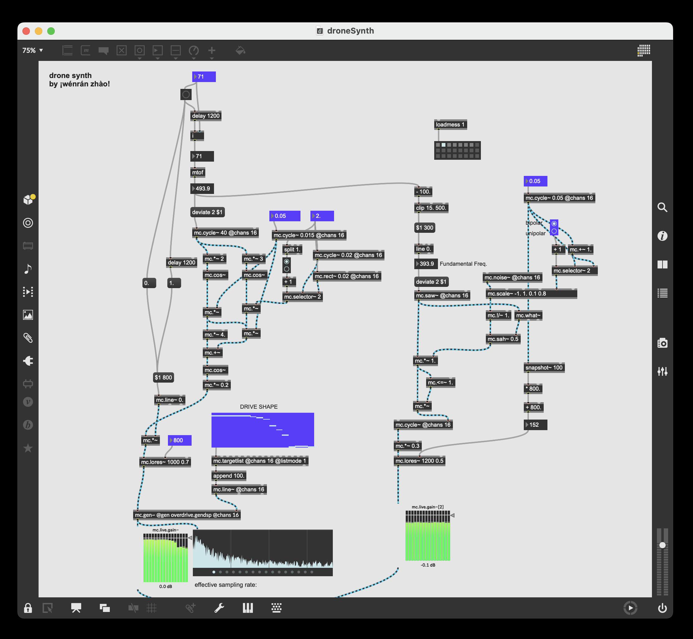
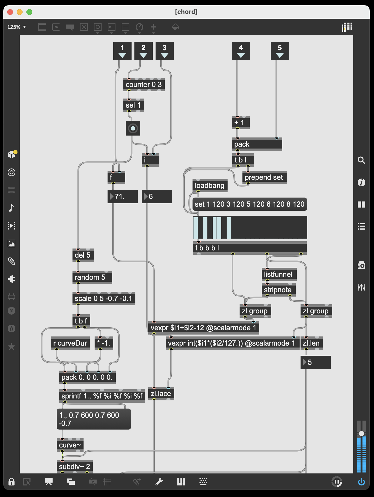
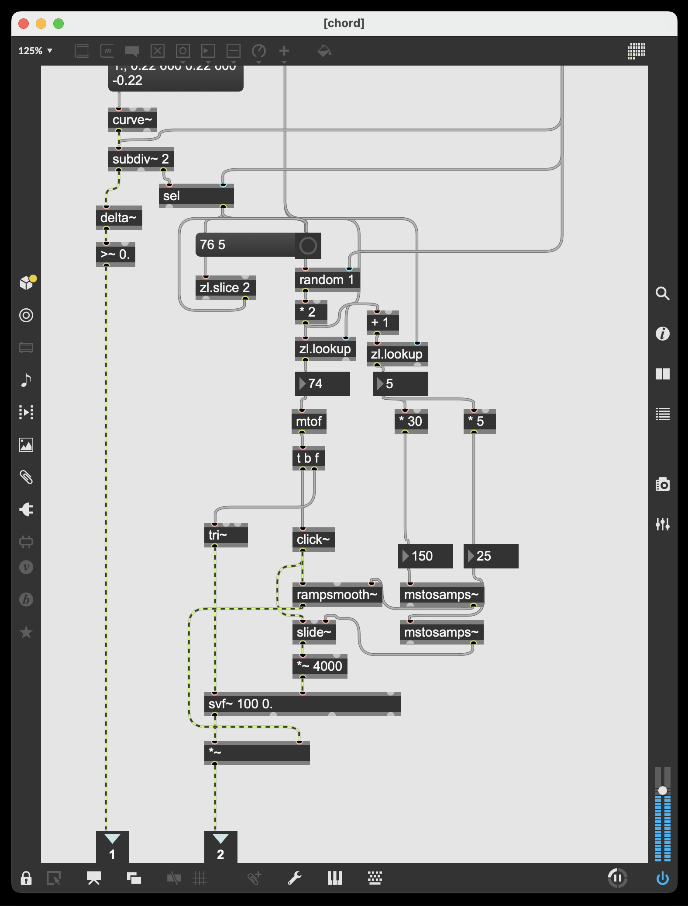

Programmed Sound
Tools
Max 8, Reaper, Audacity, Logic Pro, Ableton Live
-> I keep these patches on
Github
-> my
SoundCloud
Drone Synth
Modulated drone sounds that evolve over time. Controlled by several
LFOs.

Karplus-Strong string + chord generator


Data Sonification + Visualization: Airplane Crashes 1908-2010
Data Sonification: Immigration Speech Disrupted by Immigration Data